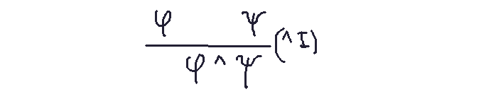
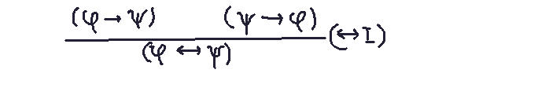
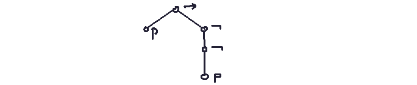
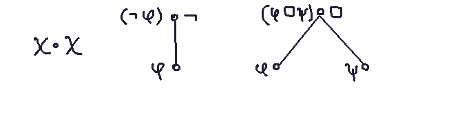
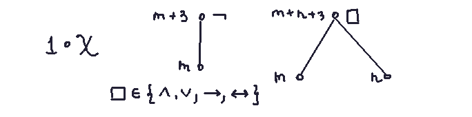
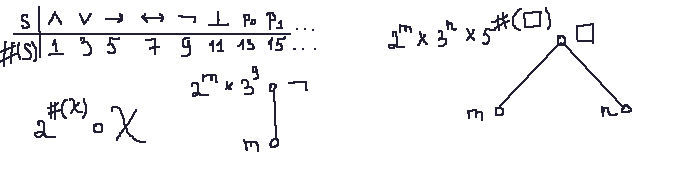
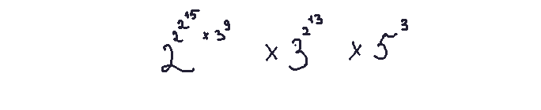

Subject: Gentzen-style natural deduction system
Source: logic study guide
Natural Deduction: Methods of Proving Statements.
A mathematical proof establishes the validity of a statement, referred to as its conclusion . Such proofs may rely on assumptions (premises taken for granted) and are formally defined as demonstrations of the conclusion from these assumptions.
Various logic systems formalize proof construction, including Gentzen-style natural deduction. In Gerhard Gentzen's approach, proofs are structured as trees, where formulas appear as nodes. The root represents the conclusion, while leaves correspond to initial assumptions (or "suppositions").
Example: Let φ and ψ denote statements. The ^I (and introduction) rule combines two statements (φ, ψ) to derive their conjunction (φ ^ ψ).

There are other rules that are comment in proof. Arguments using "if", the (-> I) rule, basically implication introduction. Arguments using "if and only if", the (<-> I) rule. Arguments using "not", "or", etc.
Besides, these rules have also "elimination" counterparts, which "undo" the operation.
Other common rules include:
- -> I (implication introduction): Derives "if φ, then ψ" by assuming φ and proving ψ.
- <->I (if and only if introduction): Establishes equivalence between statements.
- not I (negation introduction) and vI (disjunction introduction).

Formal Proofs and Metavariables:
Greek letters like φ and ψ are metavariables ranging over statements (similar to how x and y range over numbers). A natural deduction proof of φ -> (ψ -> φ) is not a proof of a specific statement but a template for infinitely many proofs. Such templates are termed formal proofs.So logic studying patterns that infinitely many different statements could have. These patterns are the real subject matter of mathematical logic. To study them closer, we work with formal languages which are designed to express the patterns that are important for arguments. So for example "words" in this language are called (propositional) symbols.
Logic and Formal Languages:
Logic studies patterns that underlie infinitely many statements. To analyze these patterns rigorously, we use formal languages designed to encode argument structures. For instance, "words" in such languages are called propositional symbols (e.g., p , q).
Parsing Trees and Compositional Definitions:
Consider the formula p -> (not not p).
Its parsing tree (a hierarchical diagram) represents syntactic structure. Rules for reconstructing formulas from parsing trees are called compositional definitions.

Three such rules are:
Leaf nodes: Copy the symbol (e.g., p) to the left-hand side.Negation nodes: For a node labeled "not", write not φ , where φ is the formula from the daughter node.
Binary nodes: For nodes with two daughters (e.g., ->), combine formulas per the operator's rules.
These instructions unambiguously cover all syntactic cases.
Variants of Compositional Definitions:
Exercise 3.2.3 in Mathematical Logic by Ian Chiswell and Wilfrid Hodges introduces an alternative definition:
Leaf nodes: An atomic symbol (e.g., p) counts as 1 symbol.
Negation nodes: Adds 3 symbols to the count (e.g., the formula (not φ) includes parentheses and the negation operator, totaling 3 symbols).
Binary nodes: Adds m + n + 3 symbols , where m and n are the symbol counts of the left and right subformulas (e.g., (φ ^ ψ) contains 5 symbols: parentheses, operator, and the two subformulas).
This compositional definition systematically calculates the total number of symbols in a formula.
Another example assigns odd positive integers to propositional symbols.

A compositional definition then maps each parsing tree node to a number, with the root's value termed the Godel number. Exercise 3.2.5 challenges the reader to reconstruct a formula from its Godel number:
Let's try to figure out what does this rule says
1. According to the given table: 2^15 is a node p_1.
2. 2^(p_1) x 3^9 = 2^m x 3^9 = (not p_1).
So we have 2^(not p_1) x 3^(2^13) x 5^3.
3. 2^13 = p_0.
4. 2^(not p_0) x 3^(p_0) x 5^3. For 5^3, 3 is v.
Resulting in ((not p_0) v p_0).
So these numbers encode the function above.